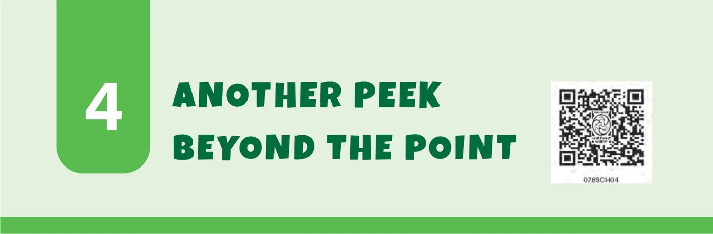
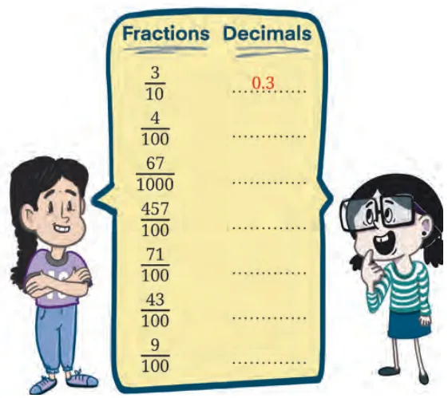
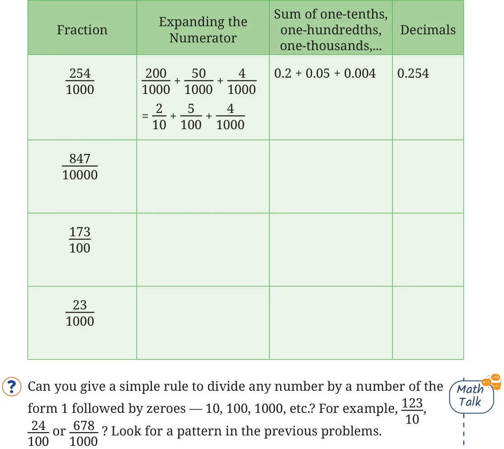
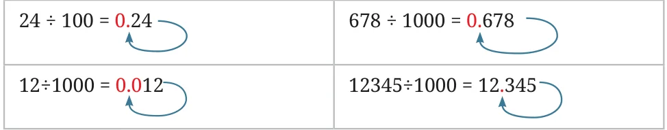

Recall that decimals are the natural extension of the Indian place value system to represent decimal fractions (\(\frac{1}{10}\), \(\frac{1}{100}\), \(\frac{1}{1000}\), and so on) and their sums. For example, 27.53 refers to a quantity that has:
- 2 Tens
- 7 Units (Ones)
- 5 Tenths
- 3 Hundredths We have already learned how to multiply and divide fractions. In this chapter, we will learn how to perform these operations with decimals. You will see that the procedures for multiplying and dividing decimals are natural extensions of the procedures for multiplying and dividing counting numbers.

Jonali and Pallabi play a game. Jonali says a fraction and Pallabi gives the equivalent decimal. Write Pallabi’s answer in the blank spaces. Jonali goes to the market to buy spices. She purchases 50 g of Cinnamon, 100 g of Cumin seeds, 25 g of Cardamom and 250 g of Pepper. Express each of the quantities in kilograms by writing them in terms of fractions as well as decimals. The fractions Jonali gave Pallabi have denominators 10, 100, 1000, and so on.
Write the following fractions as a sum of fractions and also as decimals:

Here is one such rule. Let us consider the example \(123 \div 10\). Step 1: Write the dividend as it is and place a decimal point at the end.
123. Step 2: Count the number of zeroes in the divisor.
10 1 zero Step 3: Move the decimal point from Step 1 left by the same number of places as the count from Step 2. Add zeroes in front if needed.
Examples:
